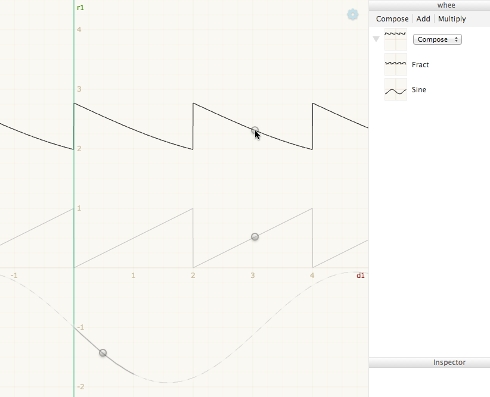
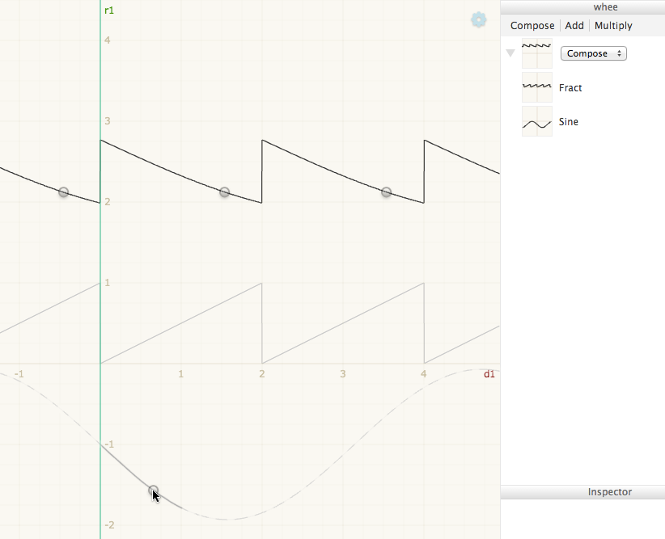
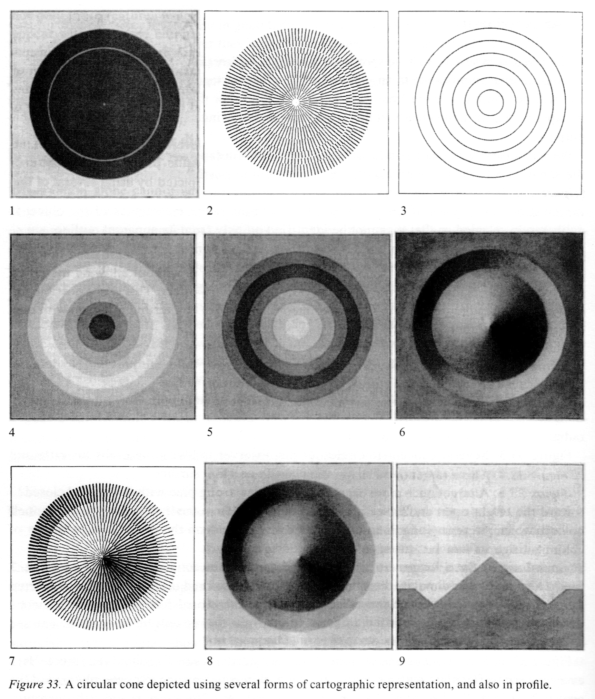
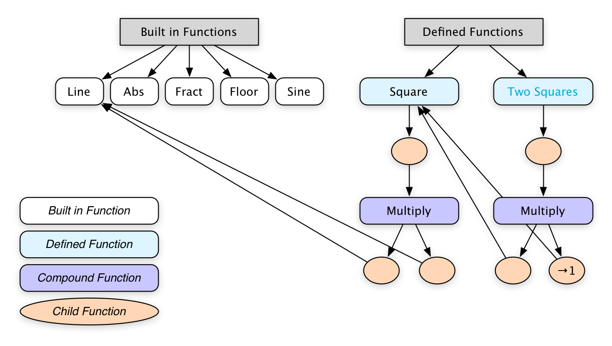
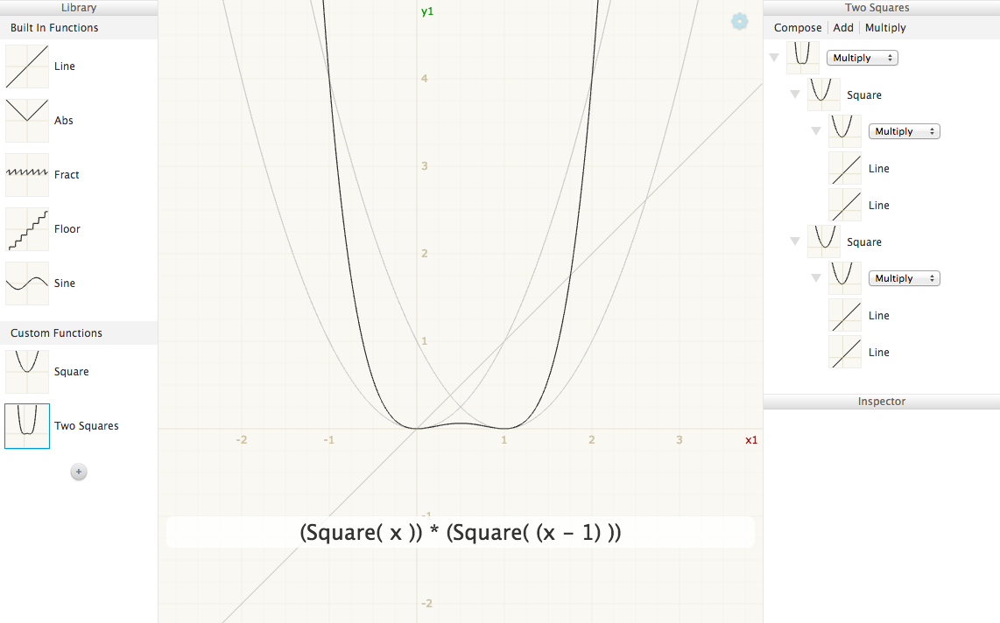

The rest of this document is structured as follows: I give a tour through past prototypes of Shadershop with an emphasis on features that were left out. Then I discuss future directions for direct manipulation in shader-like programming. I close with notes on the development process of Shadershop, and try to distill some “lessons learned” that may be helpful to others developing similar interfaces.
Evolution
Origins
Shadershop evolved from two prototypes I made for the Pixel Shaders project.
The first was an interactive visualization that let you explore a mathematical expression by breaking it down into pieces. In shaders you often come across magical one-liners that perform some signal transformation, for example abs(mod(x, 2.) - 1.) which makes a signal “bounce” between 0 and 1. Like a long sentence with unfamiliar words, these can be tricky to parse for beginners. But experienced programmers know to build understanding in parts: figure out what each subexpression does and then figure out how they combine to make the whole expression. You keep breaking the problem down into subproblems until your subproblems are small enough that you can wrap your mind around them. Then build back up again.
I tried to capture this experience through this cartesian graph visualization. The expression in question is broken down into subexpressions exactly as the computer would parse it, as in an abstract syntax tree. You can then hover any subexpression to see it, and as you move “up” the tree, you can see how each modification to the expression transforms the graph.
The goal is to get the beginner programmer thinking in terms of transformations, using functions to sculpt signals. I thought it might be neat to augment a visualization like this with a manipulation interface so that you could sculpt the signal by applying functions to it, like applying filters to an image in Photoshop.
I had the opportunity to try this during my Eyebeam/Mozilla fellowship for Pixel Shaders. Eyebeam is very much embedded in the Art world and as such the venue for expression is the gallery or exhibition. Typically to learn programming requires sitting and concentrating alone for hours. How do you convey the experience of shader programming to gallery visitors who might poke at your installation for thirty seconds and want to hang out with their friends while doing it?
Refractor was my attempt to satisfy this design constraint.
[Refractor video]
Visitors start with a base image (or live webcam feed) and apply layers of filters on top. Each filter is just a built-in GLSL primitive (abs, sin, etc.). Each layer can be given an individual affine transformation. I knew from Recursive Drawing that specifying affine transformations through direct manipulation (and especially multitouch) is very natural.
There’s no code to type and every thing you can do has immediate visual feedback. Though something I noticed is that visitors would sometimes hit reflection, and then hit reflection again, which won’t do anything. Then they get a very confused look on their face because their action had no immediate visual feedback!
I set up the installation so that the interface is mirrored on a large screen. Interaction takes on a performative quality. Visitors are always delighted to discover the live webcam feed and selfies ensue. The live webcam feed also shows that you’re not manipulating an image, you’re manipulating a spatial transformation—the base image is arbitrary.


Refractor was fun to play with, but I was disappointed that it could not be used to create arbitrary spatial transformations. I wanted a direct manipulation interface for shaders that was as mathematically expressive as typing GLSL code directly.
First Prototype
My first attempt took the “series of transformations” idea of Refractor and applied it to the simpler domain of one-dimensional functions, represented visually as a cartesian graph.
[Video building the triangle wave]
Spreads
Some transformations take additional parameters, for example + and *. When you hover over a parameter, you see a “spread” showing how the resulting graph would change if you were to scrub that parameter.
[Video showing spreads and manipulation, sine with frequency, amplitude, offset]
When you have a parameter of a function or of a program, you fundamentally need to understand how changing that parameter changes the result of the function. One way to do this is with good labels: give your variables good names. An additional technique is to make parameters scrubbable, so that you can conveniently see how changing the parameter changes the result with continuous feedback. This spread technique is yet another way to see how a parameter affects the result. It is even quicker than scrubbing, but is only useful when the spread can be effectively shown statically without being visually overwhelming.
A subtle design decision was that the spread shows the parameter values at discrete “snap points”, and they fade in and out depending on how close they are to the present parameter value. An earlier version had the spread lines move with the parameter, which was visually distracting.
[Two videos, showing discrete and moving with spreads]
Transclusion
Parameters can be transcluded across multiple transformations. I think transclusion of values is more natural than referencing variables by name in direct manipulation interfaces. Bret Victor uses a similar technique in [Drawing Dynamic Visualizations].
[GFY showing transclusion]
An advantage of transclusion is that you never have reference errors. What was a name is now just a label. Like a comment. You can write anything here, and the label changes anywhere the shared value is used.
[GFY showing renaming]
Additionally, you can reuse a computed value anywhere that you can use a constant value. Just drag the thumbnail. The “drag to transclude” gesture is consistent.
[GFY showing graph transclusion]
Second Prototype
The first prototype provided a single linear series of transformations—data flow through a single, non-branching pipeline. Crude branching pipelines were hackable by transcluding computed values. My second prototype aimed to provide more natural support for branching data flow and also to implement function abstraction—“lambda” abstraction.
Additionally, there was activity around the lab about explorable explanations, so I was interested in seeing if this type of interface could be used for interactive literate programming, source code that explains itself to its reader and provides opportunities to experiment with it in the context of reading.
Parameter Abstraction
You make a function by first creating a concrete example, then specifying that a value should be parameterized by dragging it up into the function definition area.
Start concrete, then generalize. This is the “create by abstracting” principle from Bret Victor’s Learnable Programming essay.
By first creating a concrete example, all functions automatically get default arguments. Thus in the “autocomplete”, you can immediately see the effect of a function (with its default arguments). This is “create by reacting” from Learnable Programming.
Shadershop Proof of Concept
Yoshiki Ohshima showed me an old eToys example about adding sine waves to produce a sawtooth wave and asked if we could try to produce it using the above prototype. I think we eventually got it but the interface didn’t help.
I thought about how one would ideally build the sine waves example and came up with this:
This is the moment everything came together. For me, the seed that grows these projects is an interactive prototype that demonstrates the feeling of a simple example. Once I capture the core feeling, everything else follows.
Often at the beginning of a project, what all the pieces are and how they’ll all fit together is cloudy. The solution is to pick a specific example and then make just those pieces you need for the example and fit them together. Don’t generalize, just get the basic example working! This can give a project its initial momentum.
Borrowing Cognitive “Moves” from Photoshop
Decouple the “inner journey” of programming from the surface-level activity. Then look for connections to other experiences. For example, Photoshop’s visibility toggle [eye icon] is like “commenting out” a line of code.
Compositing layers
Reordering layers - important as it’s easy to put things in the wrong order when composing functions
Changing the opacity of an image layer is like scaling the range of a function.
Moving a layer is translating the domain.
Future Directions
Showing Composition
Quoting an email from Bret Victor,
I was thinking about how to make composition clear. Adding A + B = C is pretty easy to make sense of, because A, B, and C share the same domain. But when composing A . B = C, A’s range maps to B’s domain, and it can be confusing what’s going on. A couple simple techniques might be:
Indicate which parts of B are being sampled by A. In the picture below, the portion of the sine that is actually used is drawn heavier, and the unused portion is lighter and dashed:
Interactive inspection. Mouse over a point on the output function, and see the points of the input functions that contributed to that output point:

You could also go the other way — mouse over a point on an input function, and see all the output points where that point was “used”:

You could probably combine them in some way similar to Nile Viewer, so mousing over any point highlights both where that point came from and where that point went. (It was easier with Nile Viewer because data flow was represented spatially — inputs were up and outputs were down — whereas your dependencies are more spread around the canvas, so you would need some sort of graphical convention to indicate the direction of data flow.)
The hope is that, by skimming over the functions, you can build up an understanding of where that function came from and where it went.
Additional Visual Representations
Internally, all the numbers in Shadershop are 4 dimensional. This is the just the standard vector size on GPUs, and seemed to me a good target to reach for. Unfortunately I only got up to two dimensions, and even there the visual representation is missing a dimension in the range—it shows 2D to 1D, not 2D to 2D. I gloss over this in Higher Dimensions when I pre-compose floor.
Further, the color map can only show one function at a time, so the Cartesian slices are necessary to see how multiple functions relate to each other.
It is a very important open question whether this approach “scales” to higher dimensions, or how it can be made to scale to higher dimensions through techniques such as slices, projections, or small multiples.
Alternative Visualizations
Shadershop uses a color map to visualize a function from 2D to 1D. Here are several alternatives from a book on cartography.

Here are some techniques to visualize the local effects of a function from 2D to 2D.
[Vector field, Line integral convolution, wind map]
To see the global effects of a function from 2D to 2D, you can use a spatial deformation on a known pre-image, as in Refractor.
To visualize a function from 3D to 1D, Ken Perlin applies a color map to the surface of a sphere with an interactive control to clip through it.
All of these alternatives should be available in an environment for working with mathematical functions, which is why Shadershop has a “gear” icon to toggle cartesian and color map views—I was intending it to be a slew of visualization settings.
Bootstrapping
Intriguingly, each of the above visualizations can itself be programmed as a shader. For example, you can write a pixel shader which draws a picture of a sphere textured with a given function if it’s allowed to sample from that function.
Thus in a future version it should be possible to create new, custom function visualizations within the interface. This idea of bootstrapping a direct manipulation interface within itself—the way that you can write a LISP interpreter within the LISP language—is a strong research interest of mine.
Development
Design of the Semantics
The semantics is the mathematics you are creating—the type system. Often the hardest challenge is just choosing good words for the different concepts. Sometimes a diagrammatic notation is a helpful supplement.
For Shadershop, we have the notion of a Function which can either be a Built in Function (Line, Sine, Abs, etc.) or a Compound Function. A Compound Function consists of a combiner (Add, Multiply, or Compose) and a list of Child Functions. A Child Function consists of a function and a Transformation. A Defined Function is a Compound Function whose combiner just takes the last child. Additionally a Defined Function has a label and is allowed to be used within multiple Compound Functions—it can have multiple parents, so to speak.
 
Sometimes the semantics are given. For example Recursive Drawing borrowed semantics without much modification from Context Free. The earlier Shadershop prototypes were basic variations on GLSL. But things get more exciting, and much trickier, when the semantics coevolve with the affordances of the new interface.
Design of the Interface
The interface is the surface that is presented and receives back from the human interacting with the system. Literally the interface. The nerve endings that meet the retina and finger tips.
These are some questions that come up when I’m thinking about interface design:
- How are the objects of the semantics viewed? There are often multiple views.
- How are they manipulated?
- How can implied objects be viewed? That is, if viewing the base objects of the semantics visualizes the source code of the program, how can you visualize the run-time execution of the program?
- Can the run-time be manipulated? A good exercise is to ask “what if I drag this?” What should happen?
- How are the views organized (layout)?
- How can the programmer specify what she wants to view? Where is the programmer’s focus?
Traditional programming only shows the source code of the program and the final result of the computation. Once you decide that actually all of the data that the computation produces is potentially visualizeable, the design challenge is to decide how and when to show it. When is it helpful and when does it distract? This can only be answered by understanding what the programmer is trying to do. So how can the programmer communicate this intent to the interface?
In Shadershop, the lines that are plotted on the main graph are determined by which functions are expanded in the outline.
[GFY showing outline expanding and collapsing]
Any function you see in the outline shows up on the main graph. An alternative design would be to have an additional toggle for each function, or perhaps a whole list of appearance settings for each function. I decided against this because showing and hiding needs to be fluid and because I wanted to strengthen the connection between the outline and the main graph.
Related, the pan and zoom of every thumbnail in the outline is the same as the pan and zoom of the main graph. You need this to make comparisons. Keep everything the same, except the differences that matter.
Implementation of the Semantics
I generally represent a program as a data structure, in particular as a graph. I think the term of the art is Abstract Semantic Graph.
When I’ve talked to programmers who want to make new interfaces for programming, an impulse that often arises is to make a new text-based language first, and then make a new interface that manipulates the text-based representation under the hood. Unless your intent is to make a text-based programming language, I think this is a mistake. It distracts from the opportunities of direct manipulation interfaces, and poisons your initial impulses with the affordances that the text medium encourages. You end up fiddling with parsers just to experiment with your semantics. Better, in my opinion, is to start with a data structure representation of your “source code” and get right to work on the interpreter and interface!
Text-based languages get parsed into trees. Because trees can’t have cycles, you generally need to refer to other nodes elsewhere in the tree indirectly, with some sort of name or identifier. I prefer to leapfrog this issue and just store my program as a graph rather than a tree. This representation makes it clear that a name is just a label, and you can change a name in one place and it changes everywhere, rather than making a dead link.
A very practical tip: make a way to serialize and deserialize the program representation. That is, implement auto-save! Don’t kill your program state every time you refresh your interface. The reason for this is that you want to live in your interface, not your code editor. Therefore make it painless to leave your code editor and come back home to your interface.
In Shadershop, I wrote a naive object graph serializer that creates a JSON representation of my program state. Any time I successfully render the interface I save the program representation to localStorage. So when I’m working on a new feature or fixing a bug, I can refresh the browser but not have to rebuild the thing I’m using to test the feature. I don’t save when the interface fails to render, and this usually prevents the saved program representation from getting into an inconsistent state.
Implementation of the Interface
The cartesian graphs and color maps are rendered with WebGL. I have a compiler that takes any Function from my program representation and turns it into a string of GLSL code. It was fairly straightforward until I added in cacheing and other performance complications, for example making sure that any draggable parameter is sent to WebGL as a changing “uniform” value rather than as new GLSL code. It makes the code ugly, but dragging needs to feel smooth!
You can only have so many WebGL canvases on the page before the browser complains, so I cheat with one canvas overlayed full screen and then have a render step where I find rectangles that need to have something drawn and draw appropriately.
All the DOM is rendered with React. I don’t use React’s state at all, nor do I keep track of what needs to rerender when something changes. I just rerender after every mouse and keyboard event. I like this because I can think of rendering as a pure function from my program representation to HTML and I don’t need to do any bookkeeping about what needs updating when. In the past I’ve written this bookkeeping code, or used frameworks that require cognitive load in the syntax for values that update, and it’s such a distraction when I want to focus all of my attention on exploring interface possibilities.
Interactive components are generally easy to express in React if they are self-contained. For example, to implement sliders, control points, or text fields, the pattern consists of passing in a value property as well as an onChange(newValue) callback which is responsible for doing whatever is necessary to make value equal to newValue. This onChange responsibility may be more or less involved, but the component is encapsulated from this logic.
However, it is tedious and sometimes a challenge to implement interactions which are not self-contained. For example, dragging something from one place to another requires global coordination. In particular, I felt that implementing the live reorderable outline view was harder than it needed to be. If you are a framework designer, this is a problem that needs to be solved!
[Reorderable Outline GFY]
A side note: doing any kind of dynamic typography with editable text fields is a nightmare using current contenteditable tools. We’re missing out on a lot of interesting interface possibilities because of this weakness. It would be great to have a library as reliable as, say, CodeMirror but with lower level hooks and less emphasis on code.
Graphic Design
I’m not a great graphic designer but I think I get it good enough so that it doesn’t distract.
The details need to help the eye organize the information without drawing attention away from the content. This implies using subtle colors—only high enough contrast for the task, but no higher—see for example the grid lines on the graph. The same goes for borders, shadows, and gradients. They’re just there to help the eye parse the interface, in this case to distinguish between the “content” data and interface “chrome”.
I use a CSS preprocessor to let me use variables in my CSS. This is important to keep the spacing sizes, colors, etc. consistent. The eye is drawn to elements that break the pattern, so having inconsistent spacing will distract the eye unnecessarily.
It has helped me immensely to have my CSS auto-update without having to refresh the page so that I can tweak the styles with a much tighter feedback loop.
Bootstrapping
The point of creating these interfaces is to tighten the feedback loop between the creator’s mental model and the thing being created. Tighter both in terms of response time (continuous feedback versus turn-based feedback) and “cognitive distance” (spatial manipulation for spatial domains). Give the creator a direct connection to the work.
The computer’s job is to support the creative process. Take care of all the tedious things so that the human creator can focus entirely on the creative act.
Similarly, it’s important for us to live these values during the design and development of these interfaces.
Spend as much productive time within the interface, not coding the interface.
We often do not choose our representations. We give up this choice and take what is given to us. For example, we think that to create a programming “language” we need to choose text.
Summary
Variables are shared values that are transcluded, not referenced by name.
Create functions by first creating a concrete example, then abstracting parameters out of the concrete example. An advantage of this is that you now naturally have default arguments for your function.
Find ways to work more visually, rather than in symbol land:
Don’t make a text-based language, start with an abstract data structure representation of the program so you don’t get bogged down in parsing.
Tighten your feedback loops so that you’re spending more time with the interface rather than with the code of the interface:
Serialize your program representation so refreshes don’t destroy the world.
Set up auto-updating CSS.